Using R to Analyze Fargo Crime Data
By: Brad Lindblad
LinkedIn | Github | Blog | Subscribe
tl;dr: If you are impatient and want to go straight to the fun stuff, here is a link to the interactive web dashboard that I built to supplement this analysis. Best viewed on desktop PC.
On a recent Monday afternoon that I would normally have spent slumped over my desk gingerly pecking out bits of code, I stumbled across an article about my home town that made me do a double-take. “Fargo violent crime tops U.S. national average for the first time.” The article details how the once sleepy farming community nestled in a fertile and flat ancient lake bed had surpassed the national violent crime rate.
I’m a new father so I wasn’t a little bit alarmed at these claims, so I did what any data scientist would do in that situation, I hunted down some data to learn more. Fortunately, the Fargo Police Department publishes their dispatch logs which detail all of the calls that are made to police. There is also a handy map application that helps visualize where the “danger zones” are in two dimensions. But, I wanted to know more. So I formulated a set of questions that I’ll answer below using the dispatch data from 2017.
Problem Statements
- Question 1: Which month has the most crime?
- Question 2: Which weekday has the most crime?
- Question 3: What time of day has the most crime?
- Question 4: Where are crimes committed?
But first, let’s get the assumptions and methods out of the way.
Assumptions
- Of the categories of crime in the dispatch logs, we will be looking at the calls that are actually crimes, for example, we will ignore parking complaints, chest pain and the like.
- Each call incident is reported at the block level, meaning our maps will be accurate to the block, not to the house or address.
- For brevity, I will be using the word “crime” as a substitute for “dispatch calls,” with the assumption that dispatch calls are generally indicative of crime.
Methods
The R computing language was used to perform these analyses. The complete source code can be found at this Github repository.
Which month has the most crime?
Fargo gets both hot and cold weather, but the hamlet is better known for the latter in popular culture, (thanks, Coen Brothers/FX!). Cripes, when you do an image search for Fargo, all you get are posters for the 1996 film and a bloodied Steve Buscemi:
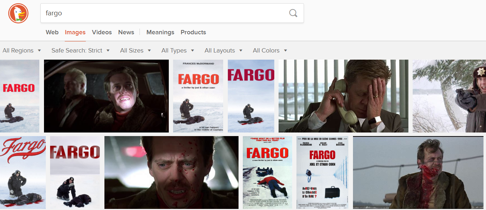
People in Northern climates know that “cabin fever” is a real thing, although not as extreme as Jack Nicholson’s interpretation in The Shining. My point is that crime is simply more difficult when you have to scrape the windshield and warm up the engine of a vehicle before boosting it.
Before I looked at the data, I assumed that crime would be sparse in the cold months, which can start as early as October and lead into May.
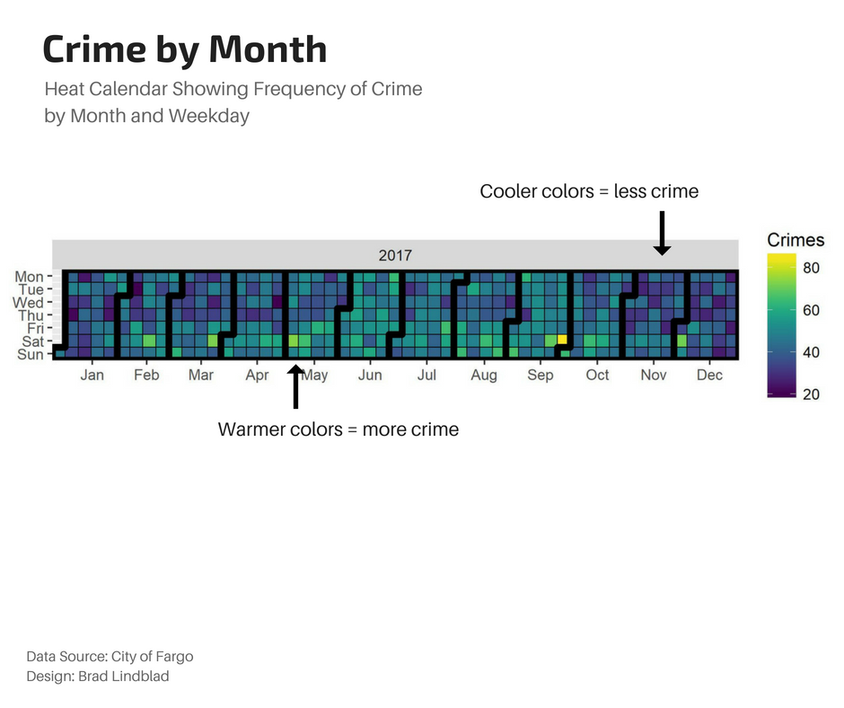
The chart above is known as a calendar heat map. It shows the crime frequency by month as well as day of week. The cooler (purple) colors indicate low crime levels, and the warmer (yellow) colors indicate high crime levels. As I suspected, November through February were relatively tame months compared to the bacchanals of June and September.
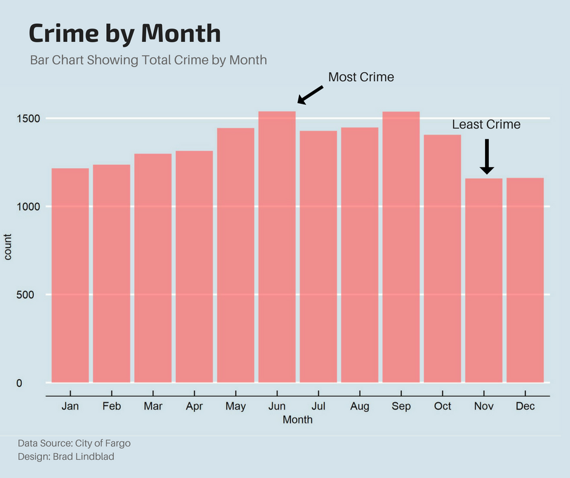
Ahh, now this bar chart makes it more clear. It seems that the frosty months starting in January leading up to May are a metaphorical ramp to the depraved summer months, with June being the pinnacle of this debauchery.
Which weekday has the most crime?
I think a bar chart will do the trick for this question as well.
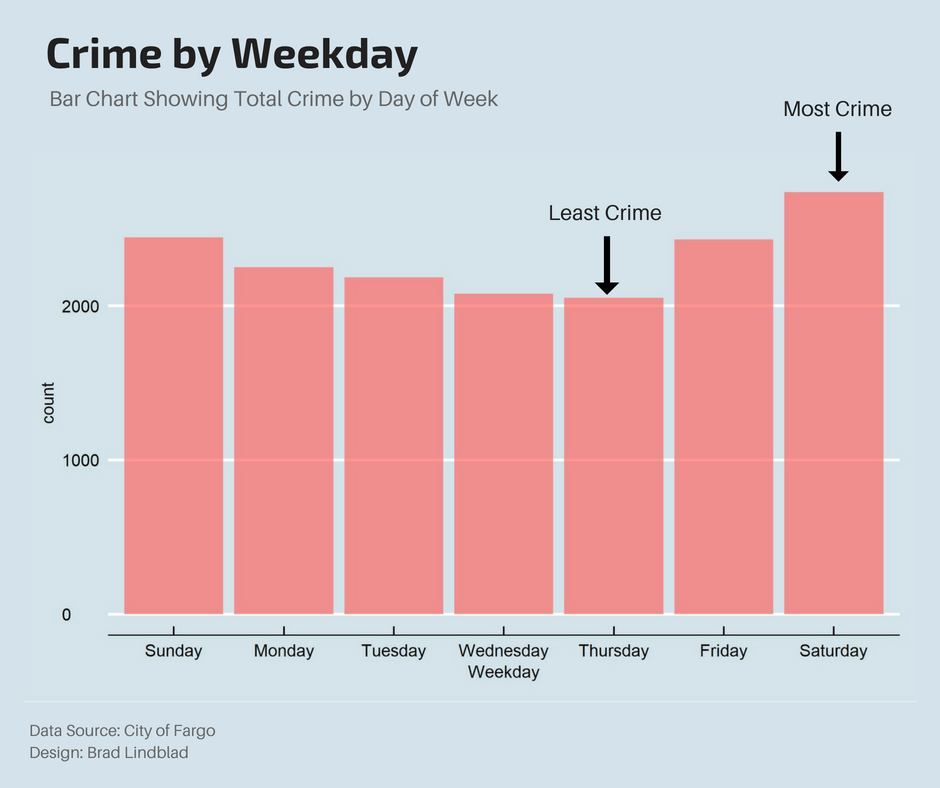
Well this makes sense. As folks get busy in their work week, they have less time for being #savage than on the weekend. I’m curious, are certain crimes more common on different days of the week? For that, I’ll pull some screenshots from the interactive dashboard:
Impaired Driver
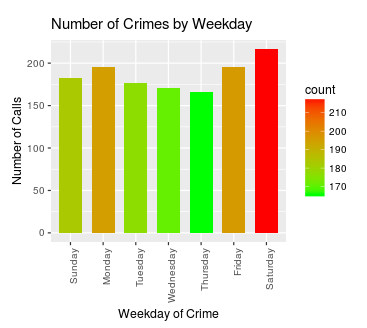
People party more on the weekend; pretty obvious.
Harassment
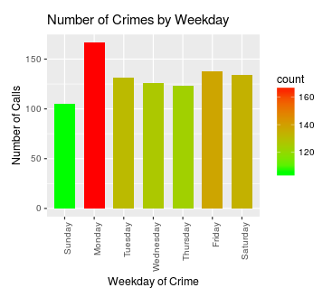
Looking at the dispatch logs, it seems like many of the calls are in response to phone harassment, like scammers. Apparently Monday is their big day at the scammer offices.
What time of day has the most crime?
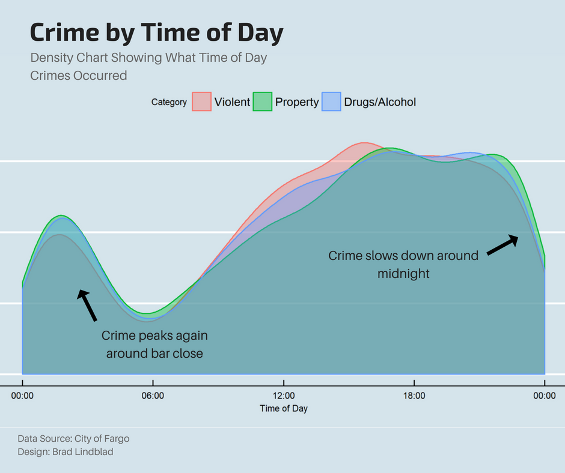
I didn’t expect to see these results. Apparently, crime drops off around midnight, before picking back up again around bar close at two AM. For simplicity, I grouped the different offence types by three subcategories.
Where are crimes committed?
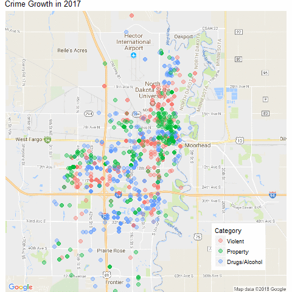
In general, there is crime all over the city. The downtown area, however, had the most crime in 2017.
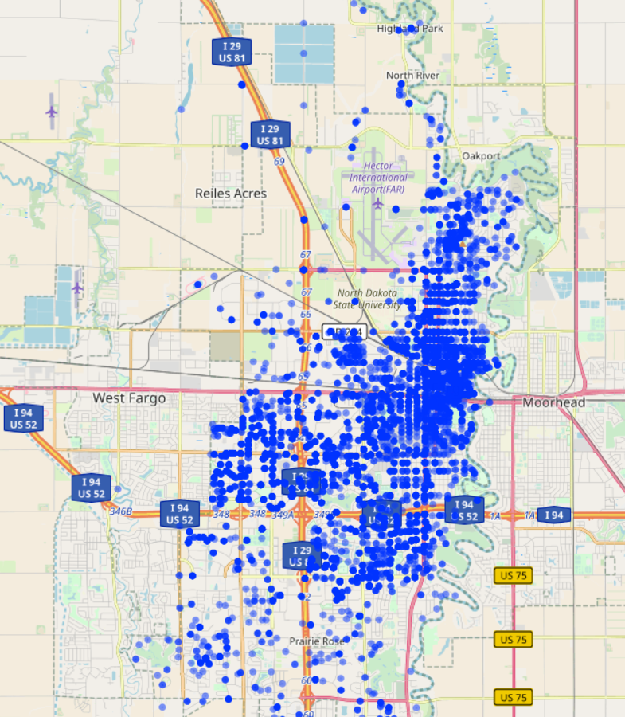
The heat map on the interactive dashboard is fun to play with to see where the hot spots were for certain crimes.
Interesting Finds
When I play with the dashboard I find a few interesting things. First of all, I notice that the peeper data was fairly concentrated in one area:
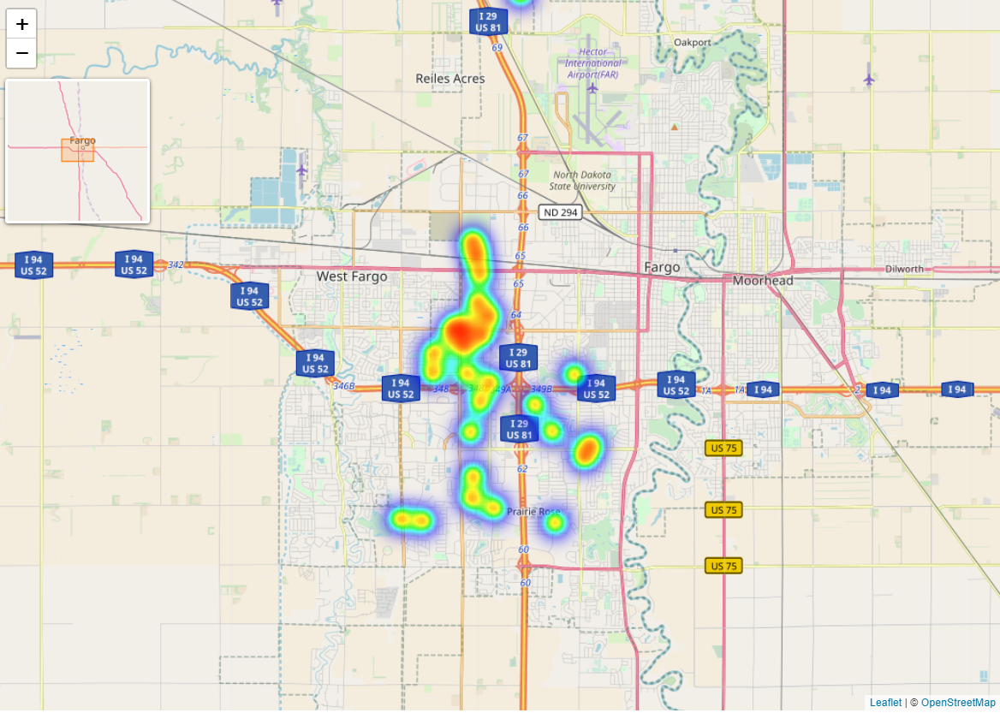
Is that area of Fargo immediately west of West Acres just prime peeping grounds? I don’t know. But it may indicate that there was just one or two peepers that were staying in their own neighborhoods. There were almost twice as many calls on Sunday vs. the rest of the week, which is a definite pattern.
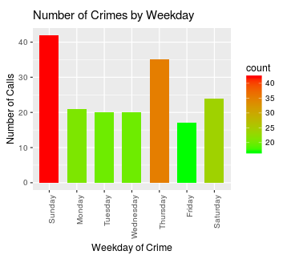
An examination of the “Overdose- Poisoning” crime chart shows a different pattern:
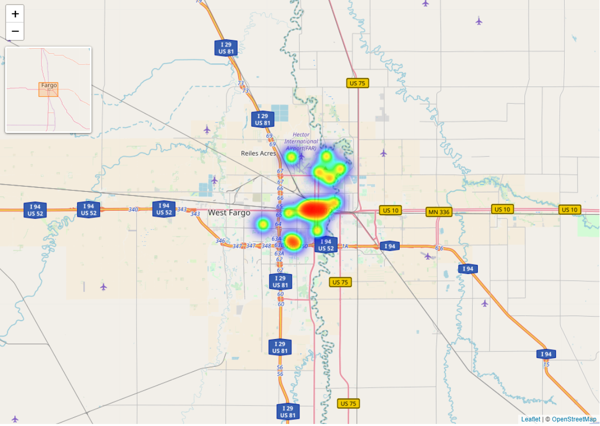
Here we see two distinct clusters; one east of Yunker Farm and another situated downtown. If I zoom in closer on the downtown cluster, we can pinpoint the epicenter (keep in mind this is data on the block-level):
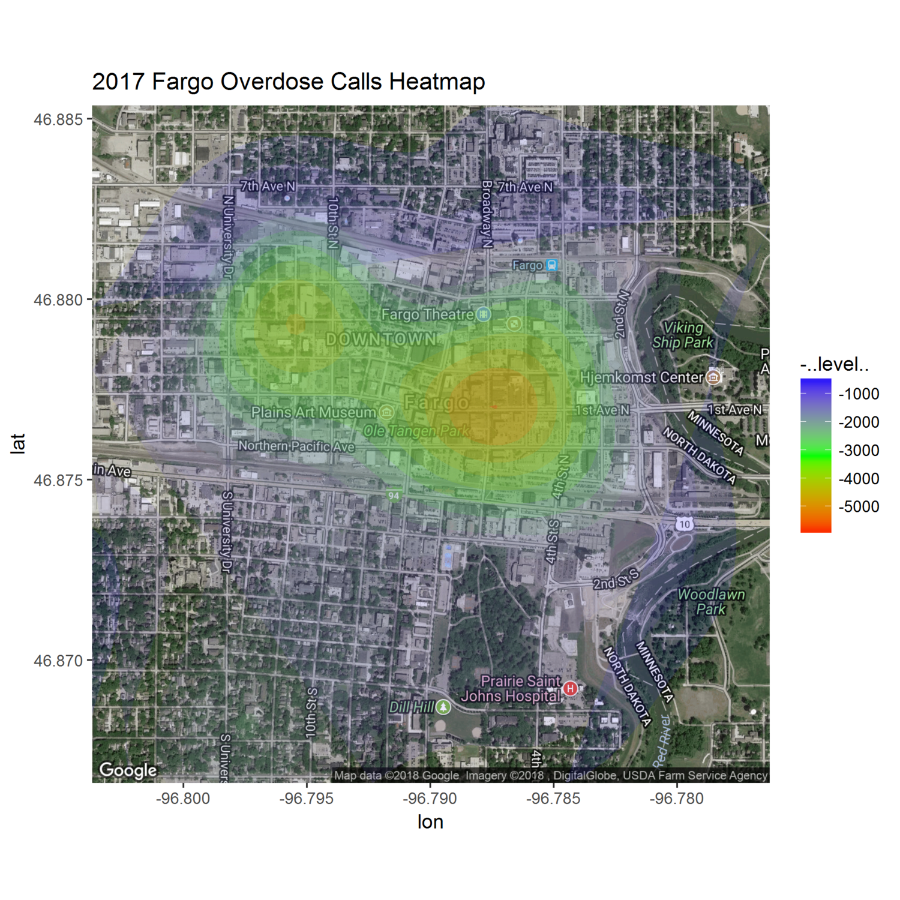
Seems like an area to be careful around.
Conclusions
So what did we learn? You will invariably come to different conclusions than myself when you examine the interactive dashboard, but my take was that (1) downtown = danger zone, (2) the cold definitely has a “cooling effect” (sorry) on local crime and (3), bar close isn’t a good time to be walking the dog.
Further Research
I toyed with the idea of building a real — time web page that showed Fargo crimes as they were happening. There is a webpage that already does something like that, but it is clumsy and slow. If there is enough interest in this analysis I’ll definitely throw the app together (shoot me an email or comment if you would like this).
Want more content like this? Subscribe here